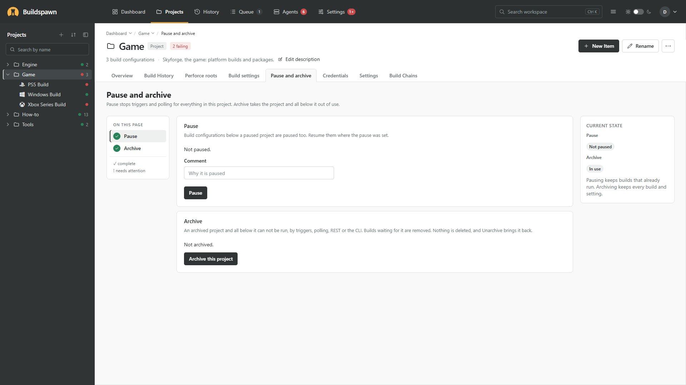

Pause and archive
Stop a whole project from starting builds, or take it out of use without deleting anything.

Pause
Pause stops triggers and polling for everything in the project. A person can still press Run. Use it for a branch freeze, a Perforce maintenance window or a license problem.
- Open the project and click Pause and archive.
- Under Pause type the reason in Why it is paused.
- Click Pause. The page says Paused by Dana on 27 Nov 2026.
- To end it click Resume.
Builds that already run finish. Everything below the project is paused too. A build configuration shows Paused from above, with the name of the project and who paused it. Resume it on the project where the pause was set.
Archive
Archive takes a project and everything below it out of use. It cannot be run by triggers, polling, the REST API or the command line. Builds that wait for it are removed from the queue. Nothing is deleted: every build, log and setting stays. Unarchive brings it back.
- Open the project and click Pause and archive.
- Under Archive click Archive and confirm.
Archiving needs the Configure permission on the project. When project roles are in use, you also need the right to manage its roles.
What is inherited
| State | What the build configurations inside get |
|---|---|
| Not paused | They run normally. |
| Paused here or above | No triggers and no polling. Manual runs still work. The state says where it was set. |
| Archived here or above | Cannot be run in any way. The state says Archived because Game is archived. |
A single build configuration has its own Pause tab with the same pause. Moving something into an archived project is refused.
What you see
A banner at the top of the paused or archived project, and a state chip in lists. The state page shows the current state: Not paused, Paused, Paused from above, Archived.
Problems and fixes
| Problem | What to do |
|---|---|
| A build configuration is paused and I cannot resume it | The pause was set higher up. Resume on the project named on the page. |
| Resume does nothing for a build that was paused | It may be paused on its own tab as well. Check both. |
| I cannot archive | You need Configure on the project and, with project roles, the right to manage roles. |